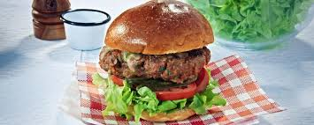

Home
Texas-Style Burger

Ready to eat Texas-Style Burger
Ingredients
- 2 lbs ground chuck
- 1 cup chopped pickled jalapeños
- 1 tsp black pepper
- 1 tsp chili powder
- 1 tsp kosher salt
- 1½ cups barbecue sauce (your favorite brand)
- 2 cups smoked sharp cheddar cheese (shredded)
- 6 onion hamburger buns
- ½ cup Texas 1015 sweet onion (diced)
- 6 slices dill pickles
- 1 handful barbecue-flavored kettle chips
- 1 handful iceberg lettuce (chopped)
- Oil (for greasing the grill)
Steps
-
Prep the Grill
- Heat the grill to medium-high. Lightly oil the grates to prevent sticking.
-
Form the Patties
- In a large bowl, gently mix ground chuck, jalapeños, black pepper, chili powder, and salt. Avoid overhandling.
- Divide into 6 equal portions, shape into patties, and create a slight indentation in the center to prevent bulging. Cover loosely and set aside.
-
Make the BBQ Cheese Topping
- Combine diced onions, shredded cheese, and barbecue sauce in a bowl. Set aside.
-
Grill the Patties
- Cook patties for 5–7 minutes per side (adjust for doneness).
- In the last 3 minutes, spoon the BBQ cheese mixture onto each patty to melt.
-
Toast the Buns
- Place buns on the grill edges for 1–2 minutes to lightly toast.
-
Assemble the Burgers
- Bottom bun: Layer with kettle chips, then the cheesy patty.
- Top with lettuce, pickles, and the top bun. Serve with iced tea or beer.